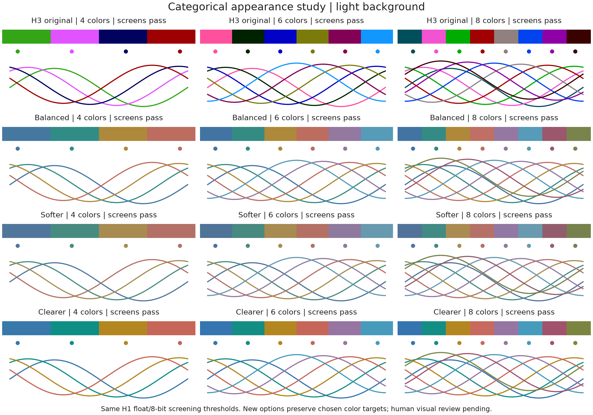
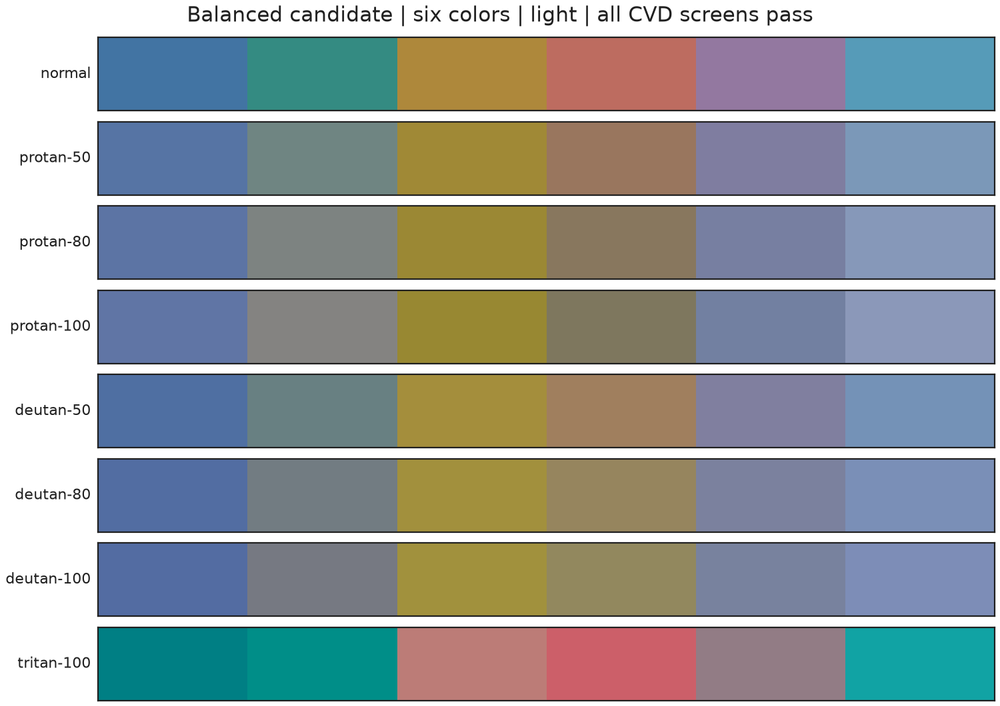
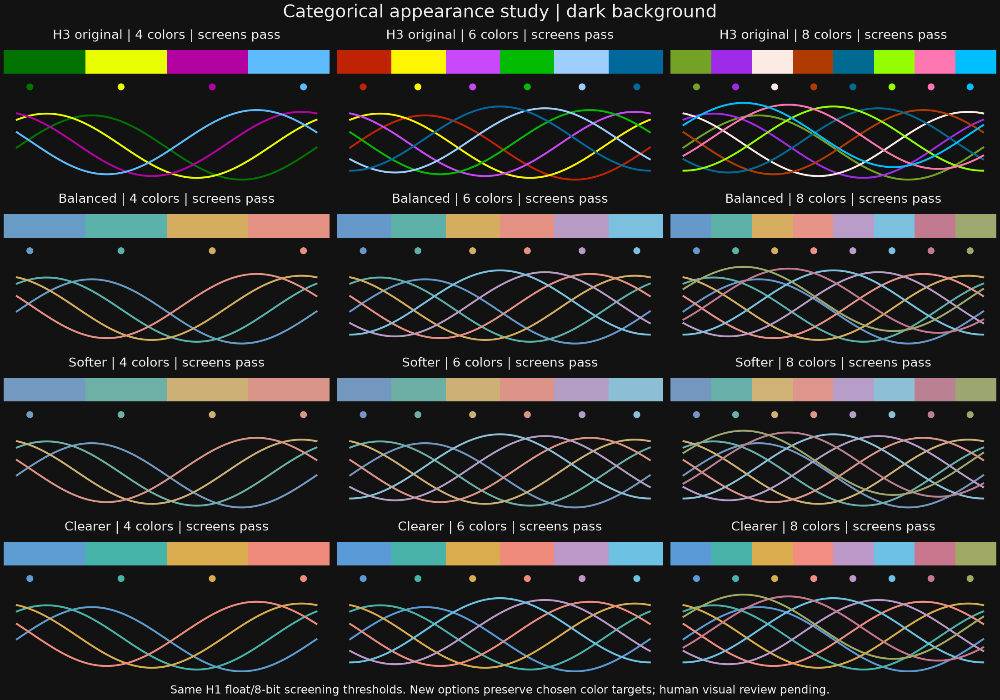
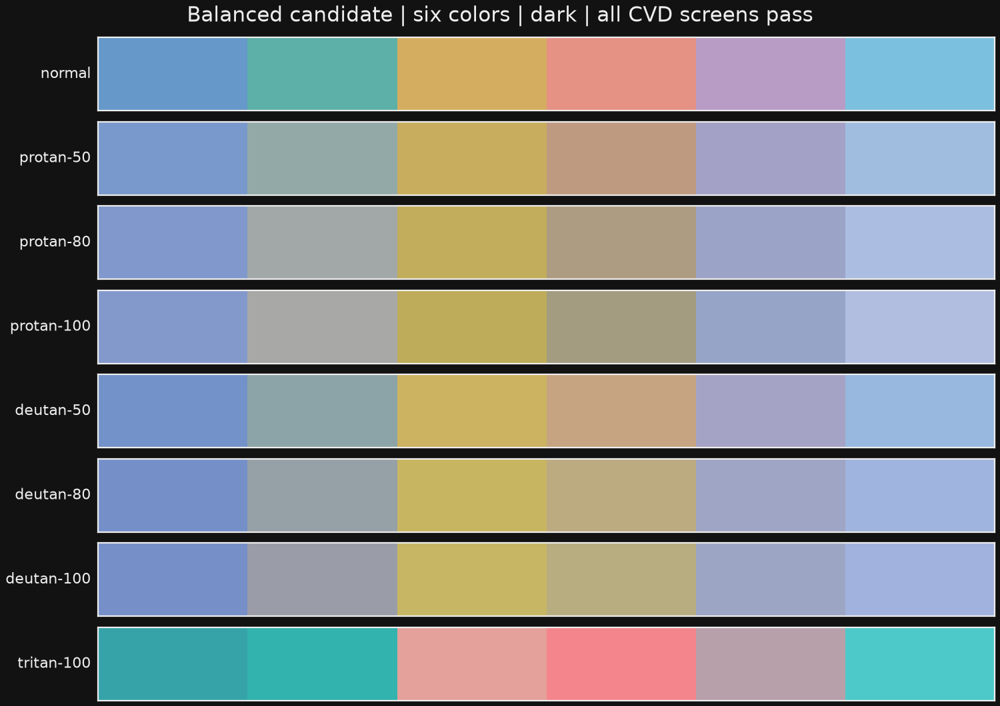

Exploratory candidates; existing H0–H3 production tables are unchanged. These alternatives keep the H1 requirements and optimize closeness to blue, teal, ochre, coral and purple targets after satisfying separation. Soft and clear variants change chroma targets. Every displayed new palette passes float and 8-bit screens; unsuccessful searches are retained in the report. Human visual review is pending.
Full recipes, reports and search results · Methods and alternatives



